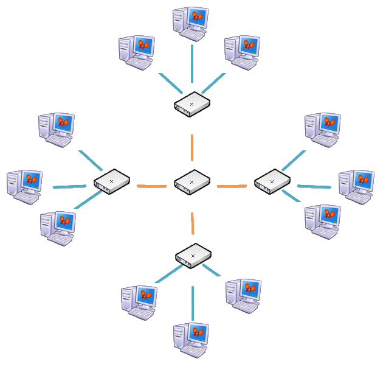
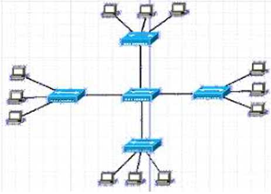

Tipos de Topología
Topología Estrella

Es la topología predominante en cableado estructurado. Cada dispositivo de red (PC, impresora, teléfono IP, etc.) está conectado a un punto central (generalmente un switch). Este modelo proporciona eficiencia y facilidad de diagnóstico.
Topología Estrella Extendida
Ampliación de la topología en estrella que incorpora múltiples switches distribuidos por plantas o zonas del edificio, conectados a un switch principal. Esta estructura es común en redes empresariales grandes o campus universitarios. Es una variante de la estrella que utiliza múltiples switches conectados entre sí para formar jerarquías. Cada switch actúa como centro de una subred que se conecta a un switch central de distribución.
Topología en Árbol

Es una combinación jerárquica de múltiples estrellas. Se utiliza cuando se requiere escalabilidad y se debe segmentar la red por áreas físicas o funcionales. Permite un diseño más estructurado y organizado. Es comúnmente usada cuando se desea tener independencia y control por zonas o departamentos.
Topología Mixta o Híbrida
Combina dos o más tipos de topologías para adaptarse a las necesidades específicas de la red. Por ejemplo, una estrella jerárquica puede incluir segmentos de anillo o bus para ciertos departamentos. En la práctica, muchos sistemas combinan varias topologías para adaptarse a las necesidades físicas del edificio y a los requerimientos del cliente.